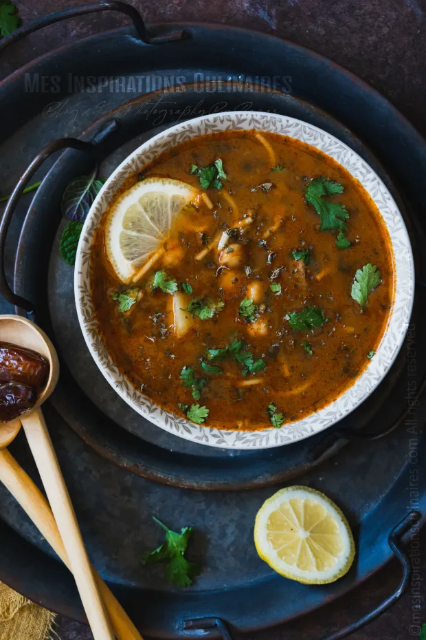

Chorba Hamra bel Frik

Algerian Lamb, Tomato, and Freekeh Soup
Chorba frik is a soup frequently prepared during the month of Ramadan. It is usually accompanied by briks or böreks.
Ingredients
- 1 cup freekeh
- ¾ pound lamb meat, cut into 1 1/2-inch cubes
- 1 onion, grated
- 1 teaspoon ground black pepper
- 1 teaspoon paprika
- 1 teaspoon ground cinnamon
- salt to taste
- 1 bunch fresh cilantro, finely chopped, divided
- 1 bunch fresh mint, finely chopped, divided
- 1 stalk celery
- 3 tablespoons vegetable oil
- ½ (14 ounce) can chickpeas, drained
- 4 cups water, or as needed
- 1 zucchini, diced
- 1 carrot, diced
- 1 tablespoon tomato paste
- 3 medium ripe tomatoes
- 1 potato, diced